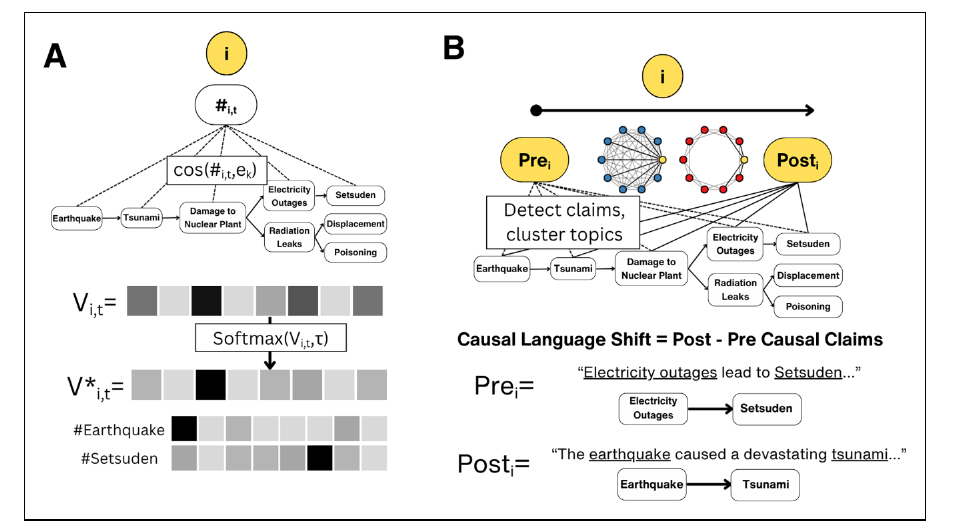
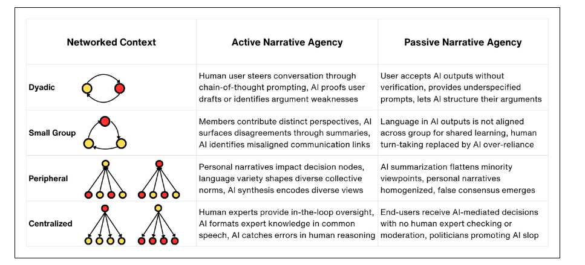

How Artificial Intelligence Shapes Human Narratives
Journal of Language and Social Psychology · 2026
Priniski, J. H. (2026). How Artificial Intelligence Shapes Human Narratives. Journal of Language and Social Psychology.
Narrative Agency in Human–AI Systems
How can artificial intelligence (AI) best support human problem-solving, creativity, and group work? I introduce a psychological account of narrative agency that formalizes how human groups learn from, communicate, and influence narratives in digital contexts. I then discuss how AI models impact human performance through a narrative agency lens, from authoring better essays to finding consensus online. Crucially, AI outputs are routed through a human’s narrative agency to generate a result that causes change in the world. Designing human–AI systems around maintaining people’s narrative agency is therefore essential for human–AI alignment.
Psychological Model of Narrative Agency
Narrative agency is a person’s ability to create, promote, or transform a narrative, including shaping its characters, plot, and causal structure (Van Laer & Orazi, 2024).
From a bird’s-eye view, expressions of narrative agency begin during a process akin to situation model construction, where individuals interpret a focal narrative embedded in a piece of media and mentally construct a personal narrative by integrating causal information in the focal narrative with background knowledge and prior beliefs.

Social learning occurs through narrative alignment, where individuals assess how others’ causal language aligns with their personal narratives and update causal beliefs and language accordingly.
Measuring Narrative Alignment
Participants read a narrative describing the causes and branching effects of the 2011 Fukushima nuclear disaster, then coordinated hashtags with network neighbors. They also wrote personal narratives before and after the interaction. Two complementary methods measure what people communicated and how their own accounts changed.

Adapted from Priniski et al. (2026), Proceedings of the National Academy of Sciences, published under a CC BY 4.0 license. Labels and layout were modified for this article.
Connecting narrative alignment during communication to changes in personal narratives
The narrative alignment measure computes cosine similarity between a hashtag’s embedding and text representing each causal event in the focal narrative. These values are normalized into an alignment vector whose values sum to one.
Larger values indicate stronger alignment with a particular event, distinguishing hashtags about causes, such as the earthquake, from those about effects, such as electricity shortages.
My causal language pipeline extracts cause-and-effect claims from personal narratives and clusters their entities into semantic topics. Comparing claims after interaction with those before it reveals how the causal content of an individual’s narrative changes.
In the network experiment, fully connected groups showed the largest increase in causal language, with most added claims focusing on causes of the disaster.
AI’s Impact on Narrative Agency
How personal narratives are related to one another depends on the network structure agents are embedded within, with network connections determining how narrative information is shared and reinforced during communications and subsequently aggregated to the group level (Centola, 2010; Centola & Baronchelli, 2015; Jha et al., 2025; Priniski et al., 2025, 2026).

Active forms of narrative agency occur when individuals construct personal narratives through causal learning and active information search and validation and, in turn, guide collective narratives through group communications; passive forms of narrative agency occur when individuals uncritically receive narrative frames when assimilating causal information into their personal narratives and exert minimal influence on the collective narratives of their social groups.
Designing human–AI systems around maintaining people’s narrative agency is therefore essential for human–AI alignment.